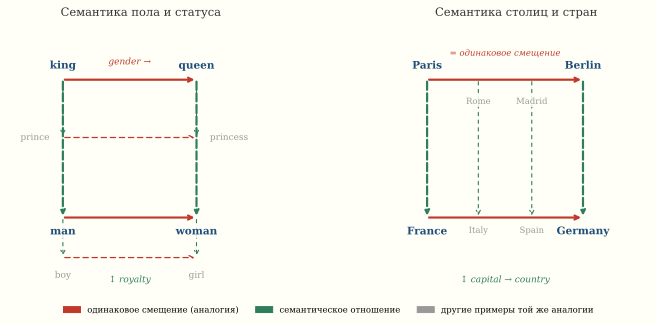

Word2Vec: слова как векторы
Модель никогда не видела определений слов и не знала грамматики — только статистику соседей. Тем не менее расстояние от вектора «Токио» до «Японии» примерно равно расстоянию от «Берлина» до «Германии». В 2013 году Томас Миколов из Google показал, что если обучить простую нейросеть предсказывать контекст слова, то побочный продукт обучения — векторные представления слов — кодирует семантические отношения как направления: вычитаем из «короля» «мужчину», прибавляем «женщину» — получаем «королеву».

Дистрибутивная гипотеза
«Вы узнаете слово по его окружению.» — Дж. Р. Фёрс, 1957
Идея восходит к лингвисту Фёрсу: значение слова определяется тем, какие слова стоят рядом с ним в текстах. «Кошка» и «собака» появляются в похожих контекстах (любит, ест, спит, хозяин), а «кошка» и «интеграл» — в совершенно разных.
До Word2Vec эту идею реализовывали через подсчёт сопутствующих слов (матрица коокуренций), SVD этой матрицы, и латентно-семантический анализ (LSA, Deerwester et al., 1990). Но SVD матрицы |V| \times |V| при словаре |V| = 100\,000 — дорого.
Архитектуры Word2Vec
Миколов предложил две архитектуры1:
1 Mikolov, Chen, Corrado, Dean. Efficient Estimation of Word Representations in Vector Space, 2013.
CBOW (Continuous Bag of Words)
По контексту (окружающим словам) предсказываем центральное слово:
\hat{w}_t = \arg\max_w P(w \mid w_{t-c}, \ldots, w_{t-1}, w_{t+1}, \ldots, w_{t+c})
Модель усредняет векторы контекстных слов и пропускает через линейный слой + softmax.
Skip-gram
Наоборот: по центральному слову предсказываем каждое из контекстных:
\max_\theta \sum_{t=1}^{T} \sum_{-c \leq j \leq c,\, j \neq 0} \log P(w_{t+j} \mid w_t; \theta)
Skip-gram работает лучше для редких слов, CBOW — быстрее и лучше для частых.
Negative Sampling
Вычислять softmax по словарю из 10^5 слов — дорого. Трюк Миколова: вместо полного softmax обучаем бинарный классификатор, который отличает настоящие пары (слово, контекст) от случайных «негативных» пар:
\log \sigma(v_w^T v_c) + \sum_{i=1}^{k} \mathbb{E}_{w_i \sim P_n} \left[\log \sigma(-v_{w_i}^T v_c)\right],
где \sigma — сигмоида, k \approx 5{-}20 негативных примеров, P_n(w) \propto f(w)^{3/4} — сглажённое распределение частот.
Магия аналогий
После обучения на большом корпусе (Google News, ~100 миллиардов слов) векторы слов приобретают структуру: семантические отношения кодируются как направления.
Король − Мужчина + Женщина ≈ Королева
\vec{v}_{\text{king}} - \vec{v}_{\text{man}} + \vec{v}_{\text{woman}} \approx \vec{v}_{\text{queen}}
Это работает, потому что вектор \vec{v}_{\text{king}} - \vec{v}_{\text{man}} кодирует «быть мужского рода при власти», а прибавление \vec{v}_{\text{woman}} переводит эту точку в женский вариант той же роли.
Выберите слова a − b + c и тащите любую точку-слово мышью — параллелограмм аналогии и ближайшее слово к результату перестраиваются прямо под пальцем.
Париж − Франция + Германия ≈ Берлин
\vec{v}_{\text{Paris}} - \vec{v}_{\text{France}} + \vec{v}_{\text{Germany}} \approx \vec{v}_{\text{Berlin}}
Разность «Париж − Франция» ≈ «столица_из» — направление, кодирующее отношение «город → страна».
Нейросеть не учили понимать аналогии — она вынуждена была сжать язык в пространство, где арифметика работает. Это не фокус — это неизбежное следствие дистрибутивной гипотезы в непрерывном пространстве.
Почему именно ~300 измерений? По теореме Джонсона–Линденштрауса n точек в \mathbb{R}^d сохраняют попарные расстояния с погрешностью \varepsilon при d = O(\varepsilon^{-2} \log n). Для словаря в 3 миллиона слов это даёт несколько сотен измерений — не магия, а теорема.
Таблица аналогий
Каждая строка читается как a - b + c \approx d — та же арифметика, что в форме виджета выше.
| Отношение | a | b | c | d (найдено) |
|---|---|---|---|---|
| Пол | king | man | woman | queen |
| Столица | Paris | France | Germany | Berlin |
| Пол (рус.) | король | мужчина | женщина | королева |
| Время глагола | walking | walked | swimming | swam |
| Сравнительная степень | bigger | big | small | smaller |
| Валюта | yen | Japan | Russia | ruble |
import gensim.downloader as api
# Загрузка предобученной модели (300-мерные вектора)
model = api.load("word2vec-google-news-300")
# Классическая аналогия
result = model.most_similar(
positive=["king", "woman"],
negative=["man"],
topn=3
)
print("king - man + woman =")
for word, score in result:
print(f" {word}: {score:.4f}")
# king - man + woman =
# queen: 0.7118
# monarch: 0.6189
# princess: 0.5902
# Географическая аналогия
result = model.most_similar(
positive=["Paris", "Germany"],
negative=["France"],
topn=3
)
print("\nParis - France + Germany =")
for word, score in result:
print(f" {word}: {score:.4f}")
# Paris - France + Germany =
# Berlin: 0.7331
# Munich: 0.5624
# Hamburg: 0.5114Почему это работает: геометрия
Levy и Goldberg2 показали, что Word2Vec с negative sampling неявно факторизует матрицу поточечной взаимной информации (PMI):
2 Levy, Goldberg. Neural Word Embedding as Implicit Matrix Factorization, NeurIPS 2014.
\vec{v}_w \cdot \vec{v}_c \approx \text{PMI}(w, c) - \log k,
где \text{PMI}(w, c) = \log \frac{P(w, c)}{P(w)P(c)}.
Аналогии работают, потому что в пространстве PMI отношения типа «столица-страна» статистически регулярны: слова «Париж» и «Берлин» появляются в похожих контекстах (правительство, парламент, столица), слова «Франция» и «Германия» — тоже (страна, экономика, население), а разность PMI оказывается приблизительно постоянной.
Визуализация: t-SNE проекция
300-мерные векторы можно спроецировать на плоскость с помощью t-SNE (van der Maaten, Hinton, 2008), сохраняющей локальные расстояния:
import numpy as np
from sklearn.manifold import TSNE
import matplotlib.pyplot as plt
words = [
# Страны и столицы
"France", "Paris", "Germany", "Berlin",
"Italy", "Rome", "Spain", "Madrid",
"Japan", "Tokyo", "Russia", "Moscow",
# Королевская семья
"king", "queen", "prince", "princess",
"man", "woman", "boy", "girl",
# Еда
"pizza", "sushi", "burger", "pasta",
]
vectors = np.array([model[w] for w in words])
tsne = TSNE(n_components=2, random_state=42, perplexity=8)
coords = tsne.fit_transform(vectors)
plt.figure(figsize=(12, 8))
for i, word in enumerate(words):
plt.scatter(coords[i, 0], coords[i, 1], s=50, c='steelblue')
plt.annotate(word, (coords[i, 0] + 0.5, coords[i, 1] + 0.5),
fontsize=11)
# Стрелки аналогий
for a, b in [("France", "Paris"), ("Germany", "Berlin"),
("king", "queen"), ("man", "woman")]:
ia, ib = words.index(a), words.index(b)
plt.annotate("", xy=coords[ib], xytext=coords[ia],
arrowprops=dict(arrowstyle="->", color="crimson",
lw=1.5))
plt.title("t-SNE проекция Word2Vec")
plt.axis("off")Не все аналогии работают одинаково хорошо. Mikolov et al. предложили тест из 19 544 вопросов в 14 категориях (семантических и синтаксических). Accuracy на этом тесте — около 60–75% для лучших моделей. Аналогии типа «муж − жена + бабушка = ?» часто дают неправильный ответ, потому что отношения не всегда линейны.
От Word2Vec к современным эмбеддингам
Word2Vec — статический эмбеддинг: каждому слову соответствует ровно один вектор, вне зависимости от контекста. Слово «банк» в «денежный банк» и «берег реки» получает одно и то же представление.
Контекстуальные эмбеддинги (ELMo, 2018; BERT, 2019; GPT) решают эту проблему: вектор слова зависит от всего предложения. Каждый слой Transformer порождает свой набор эмбеддингов, и один и тот же токен в разных контекстах получает разные координаты.
Идея Word2Vec — слова живут в геометрическом пространстве, где близость означает семантическое сходство — стала фундаментом, на котором BERT и GPT построили контекстуальные представления.
Численный эксперимент: обучение с нуля
from gensim.models import Word2Vec
from gensim.utils import simple_preprocess
# Корпус: русская Википедия (упрощённый пример)
sentences = [
simple_preprocess("Москва столица России"),
simple_preprocess("Берлин столица Германии"),
simple_preprocess("Париж столица Франции"),
simple_preprocess("Лондон столица Великобритании"),
simple_preprocess("Россия большая страна"),
simple_preprocess("Германия европейская страна"),
simple_preprocess("Франция европейская страна"),
# ... нужны миллионы предложений для хороших эмбеддингов
]
model = Word2Vec(
sentences,
vector_size=100, # размерность вектора
window=5, # окно контекста
min_count=1, # минимальная частота слова
sg=1, # 1 = skip-gram, 0 = CBOW
negative=5, # число негативных примеров
epochs=100,
)
# Для осмысленных аналогий нужен корпус ≥ 100M слов
# На малом корпусе результаты будут шумныеСвязи
- SVD и сжатие (§ SVD): Word2Vec ≈ факторизация матрицы PMI
- Transformer (§ Transformer): контекстуальные эмбеддинги как эволюция
- Случайные проекции (§ Johnson–Lindenstrauss): почему 300 измерений хватает для словаря из 3 миллионов
- t-SNE: нелинейная проекция для визуализации высокомерных данных